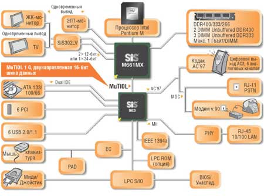

Евгений Рудометов
В статье использованы открытые материалы компаний-производителей процессоров и НМС.
Совершенствование полупроводниковых и компьютерных технологий позволило повысить степень интеграции комплектующих. В результате удалось создать компактные системы, основой которых служат мобильные процессоры и соответствующие наборы микросхем системной логики - мобильные НМС. Использование оптимально спроектированного специализированного набора становится залогом широких функциональных возможностей системы, включая высокую производительность.
Сегодня бесспорным лидером на рынке мобильных процессоров и поддерживающих их НМС остается компания Intel (http://www.intel.com). Однако, несмотря на свою финансовую и технологическую мощь, корпорация подвергается жесткому давлению со стороны агрессивных конкурентов. Прежде всего это связано с очень быстрым ростом данного сегмента рынка, что приводит к концентрации финансовых и промышленных ресурсов, обеспечивающих не только массовый выпуск мобильных устройств, но и получение высокой прибыли.
Основные игроки второго эшелона
Кроме компании Intel, на рынке НМС для мобильных систем заметную роль играют такие известные производители наборов микросхем, как VIA Technologies (http://www.via.com.tw) и Silicon Integrated System Corporation (SiS, http://www.sis.com). В последнее время о своих претензиях на определенную долю этого перспективного сегмента компьютерного рынка заявила и ULi Electronics (http://www.uli.com.tw), дочерняя компания некогда известного разработчика и производителя популярных настольных и мобильных НМС - Acer Laboratories (ALi).
Недавно к коллективу извечных соперников Intel добавилась еще и ATI Technologies (http://www.ati.com). Эта компания получила широкую известность благодаря своим графическим процессорам оригинальной архитектуры, ставшим основой для высокопроизводительных видеоадаптеров. Как известно, они успешно конкурируют с аналогичными изделиями от NVIDIA. Среди достижений ATI необходимо отметить и ее НМС с интегрированной графикой, созданные для настольных компьютеров. Интересно, что производительность встроенных в эти НМС видеосредств нередко выше, чем у решений Intel.
А сравнительно недавно и NVIDIA Corporation (http://www.nvidia.com), вдохновленная успехами на рынке видеоадаптеров и высокопроизводительных НМС, созданных для сектора настольных компьютеров с процессорами AMD, предложила свои собственные решения для мобильного рынка. Правда, следует отметить, что пока производители мобильных систем не спешат их использовать в своих изделиях. Но вполне возможно, что со временем ситуация станет более благоприятной для этого известного производителя сложных комплектующих.
Конечно, доли всех этих компаний сейчас не слишком велики и пока не представляют реальной угрозы для лидера, контролирующего подавляющую часть рынка мобильных НМС (по некоторым оценкам, доля Intel в этом сегменте составляет более 80%). Тем не менее системы альтернативной архитектуры успешно выпускаются и не менее успешно реализуются среди производителей мобильных компьютеров.
Подчеркнем, что наличие у Intel конкурентов - мощных производителей чрезвычайно сложных и сравнительно качественных микросхем, служит двигателем для развития всей отрасли. Кроме того, их существование не допускает монополизма и ограничивает финансовый аппетит лидера. Все это способствует не только быстрому прогрессу в области производства сверхсложных микросхем, но и значительному снижению цен на широкий спектр компьютерных комплектующих, а следовательно, и конечную продукцию производителей мобильных систем.
Сегментация по процессорам
Прежде чем рассматривать мобильные НМС, необходимо отметить, что, вообще говоря, их имеет смысл условно поделить в соответствии с обслуживаемыми процессорами. Дело в том, что у компании Intel, как и в случае НМС, существуют конкуренты в сегменте мобильных процессоров. В этой роли выступают такие известные игроки компьютерного рынка, как AMD (http://www.amd.com), VIA и Transmeta (http://www.transmeta.com). Впрочем, последняя недавно заявила, что из-за производственных и финансовых трудностей уходит с рынка производителей процессоров, ограничившись исключительно научными разработками, лицензированием своих достижений, а также предоставлением платных консультаций. Однако изделия от фирмы Transmeta не только работают сегодня у многочисленных пользователей, но и до сих пор встречаются в прайс-листах продавцов.
Изделия VIA
Процессоры VIA можно эксплуатировать с НМС Intel, созданными для процессоров Intel Pentium III и Pentium III-M. Однако сама VIA для своих процессоров рекомендует собственные НМС для встроенных и мобильных решений. К слову сказать, компания, воспользовавшись ситуацией, сложившейся на компьютерном рынке из-за ряда ошибок Intel (достаточно вспомнить эпопею с Rambus), сумела захватить лидерство в области НМС. Однако Intel сделала правильные выводы, и теперь VIA приходится бороться уже за второе место со своим извечным противником - SiS.
Специально компания VIA, по крайней мере на официальном сайте, не выделяет класс мобильных НМС в массе своих многочисленных наборов микросхем системной логики, но они все-таки существуют. В качестве возможных вариантов, используемых для мобильных систем, можно привести, например, НМС VIA PN133, VIA PN266T, VIA CLE266 и VIA CN400. Вообще говоря, эти наборы микросхем предназначены для процессоров, выпускаемых самой VIA, однако они способны поддерживать и соответствующие процессоры извечного конкурента - компании Intel (речь идет о Pentium III и Pentium III-M).
Модель VIA PN133 ориентирована на сегмент мобильных систем и поддерживает мобильные процессоры VIA C3 и Intel Pentium III-M. НМС рассчитан на шину FSB с тактовой частотой 66/100/133 МГц. Компонент северного моста, представленный микросхемой VIA VT8603, имеет встроенные средства графики S3 Graphics ProSavage4, предусматривающие аппаратную поддержку 2D/3D, использование внутренней шины с полосой AGP 4x, реализацию архитектуры SMA. Применение внешнего видеоадаптера не предусмотрено. НМС совместим с модулями оперативной памяти PC100/133 SDRAM и VCM (Virtual Channel Memory); максимальный объем - 1,5 Гбайт. В качестве южного моста, подключаемого к северному мосту посредством шины PCI с полосой пропускания 133 Мбайт/c, применяется микросхема VIA VT8231. Предусматривается поддержка двух аудиоканалов AC'97 и модема MC'97, а также PCI, ATA 33/66, четырех USB-портов, LPC Super I/O и т. п. Возможно использование и других вариантов южного моста, подключаемых посредством шины PCI.
НМС VIA PN266T также предназначен для мобильных систем. Поддерживает мобильные процессоры VIA C3 и Intel Pentium III-M, а также "настольные" VIA C3, Intel Pentium III и Celeron. Рассчитан на шину с тактовой частотой 100/133 МГц. Компонент северного моста, представленный микросхемой VIA VT8613, имеет встроенные средства графики S3 Graphics ProSavage8, предусматривающие аппаратную поддержку 2D/3D, использование внутренней шины с полосой AGP 8x, компенсацию движений DVD и реализацию архитектуры Shared Memory Architecture (SMA), обеспечивающей выделение части оперативной памяти под нужды видеосредств. Внешний видеоадаптер не поддерживается. НМС рассчитан на использование модулей оперативной памяти DDR266/200 SDRAM или PC133/100 SDRAM максимальным объемом 4 Гбайт. В качестве южного моста, подключаемого к северному мосту посредством VIA V-Link с полосой пропускания 266 Мбайт/c, применяется микросхема VIA VT8233 или VIA VT8233C. Поддерживаются шесть аудиоканалов AC'97 и модем MC'97. Встроенные средства VIA (VIA VT8233) или 3Com (VIA VT8233C) Ethernet MAC 10/100 Мбит/с Ethernet обеспечивают подключение к локальной сети. Поддерживается PCI, ATA 33/66/100, шесть USB-портов, LPC Super I/O, IO APIC, ACPI/APM/PCI/PM и технологии энергосбережения, такие, как Intel SpeedStep. Структура компьютера на базе этого НМС показана на рис. 1.
| Рис. 1. Структура компьютера на базе НМС VIA PN266T.
|
НМС VIA CLE266 способен работать с шиной 133/100/66 МГц, модулями оперативной памяти DDR266/200 SDRAM или PC133/100 SDRAM объемом до 2 Гбайт. Он также имеет встроенные графические средства, когда-то разработанные компанией S3, но может использовать и внешний видеоадаптер AGP 8x/4x. Второй компонент НМС, южный мост, представлен микросхемой VIA VT8235.
Модель VIA CN400 рассчитана на тактовую частоту шины 200/133/100 МГц, модули памяти DDR400/333/266 SDRAM объемом до 4 Гбайт, имеет встроенные графические средства S3, но может, как VIA CLE266, использовать внешний видеоадаптер AGP 8x/4x. Второй компонент НМС - микросхема VIA VT8237.
Обе микросхемы южного моста - VIA VT8235 и VIA VT8237 - поддерживают шину 8x V-Link (533 Мбайт/с) для подключения к северному мосту; AC'97 и MC'97; аудиосредства VIA Vinyl 6-channel Audio (AC'97); адаптеры локальной сети VIA MAC 10/100 Мбит/с Fast Ethernet; шесть PCI-устройств; Parallel ATA133 (до четырех устройств); I/O APIC; LPC Super I/O; ACPI/APM/PCI/PM. Отличие же микросхемы VIA VT8237 от VIA VT8235 в том, что первая поддерживает скоростной интерфейс для подключения накопителей Serial ATA и функции RAID для создания массива из нескольких накопителей на жестких магнитных дисках. Кроме того, VIA VT8237 поддерживает восемь USB-портов. В варианте же с микросхемой VIA VT8235 из перечисленных функций присутствует шесть USB-портов, а SATA и RAID не поддерживаются. Тем не менее, несмотря на меньшее число аудиоканалов и отсутствие новых перспективных функций, именно микросхема южного моста VIA VT8235 (а не VIA VT8237) более популярна сегодня среди производителей мобильных решений, выполненных на основе НМС VIA и ориентированных на процессоры VIA или Intel.
Описанные НМС, как отмечалось выше, поддерживают соответствующие процессоры VIA и Intel (табл. 1). Что же касается процессоров компании AMD, обладающих своей собственной, оригинальной архитектурой и несовместимых по интерфейсам подключения и процессорному разъему, то для них VIA предлагает специальные НМС. В качестве вариантов, которые подходят для мобильных систем, можно рассматривать наборы микросхем системной логики KN133, VIA KN266 и VIA KN400.
Таблица 1. Соответствие процессоров и НМС VIA
| Процессор | Частота шины, МГц | НМС | Тип памяти |
| VIA Eden, VIA Antaur, VIA C3, VIA C3 M, Intel Pentium III | 133, 100 | VIA PN266T | DDR или SDR |
| 200, 133, 100 | VIA CN400 | DDR | |
| 133, 100, 66 | VIA CLE266 | DDR или SDR | |
| Intel Pentium III-M, Intel Celeron, VIA C3 | 133, 100, 66 | VIA PN133 | SDR или VCM |
| 133, 100 | VIA PN266T | DDR или SDR | |
| AMD Athlon, AMD Duron, AMD Mobile Athlon, AMD Mobile Duron | 200, 266 | VIA KN133 | SDR или VCM |
| AMD Athlon XP | 200 | VIA KN266 | DDR или SDR |
| 333, 266, 200 | VIA KN400 | DDR | |
| Mobile AMD Athlon 64, Mobile AMD Sempron | 800 | VIA K8N800 | Определяется процессором |
| Mobile AMD Athlon 64, Mobile AMD Sempron, AMD Turion 64 | 800 | VIA K8N800A | Определяется процессором |
НМС VIA KN133 поддерживает мобильные процессоры AMD Mobile Athlon и AMD Mobile Duron, равно как и настольные варианты этих процессоров. Архитектура его во многом совпадает с VIA PN133, но, в отличие от аналога, VIA KN133 рассчитан на шину с частотой передачи данных 200/266 МГц (FSB DDR). Северный мост, представленный микросхемой VIA VT8362, также имеет встроенные средства графики S3 Graphics ProSavage4, предусматривающие аппаратную поддержку 2D/3D, использование внутренней шины с полосой AGP 4x, реализацию архитектуры SMA. Внешний видеоадаптер не поддерживается. НМС рассчитан на использование модулей оперативной памяти PC133/100 SDRAM и VCM (Virtual Channel Memory) максимальным объемом 1,5 Гбайт. В качестве южного моста, подключаемого к северному мосту посредством шины PCI с полосой 133 Мбайт/c, применяется микросхема VIA VT8231. Предусмотрена поддержка двух аудиоканалов AC'97 и модема MC'97, а также PCI, ATA 33/66, четырех портов USB, LPC Super I/O и т. п. Могут использоваться и другие микросхемы южного моста, подключаемые посредством шины PCI.
НМС VIA KN266 ориентирован на мобильные процессоры AMD c архитектурой ядра AMD Athlon XP, работающие на частоте шины 200 МГц. Архитектура и параметры его во многом совпадают с VIA PN266T. Как и аналог, рассчитанный на процессоры VIA и Intel, этот НМС содержит встроенные средства графики S3 Graphics ProSavage8 и не предусматривает внешнего видеоадаптера. Совместим с модулями оперативной памяти DDR200/266 SDRAM или PC100/133 SDRAM (их общий максимальный объем может достигать 4 Гбайт). Совместно с микросхемой северного моста VIA VT8372 производитель рекомендует использовать в НМС VIA KN266 южный мост VT8233 или VT8233C, описанные выше. Эти компоненты поддерживают аудио AC'97, 10/100 Мбит/с Ethernet, PCI, шесть USB-портов, ATA 33/66/100, ACPI/APM/PCI/PM.
Более мощный по сравнению с описанными выше наборами от VIA - НМС VIA KN400. Он ориентирован на мобильные процессоры AMD Athlon XP и AMD Duron с частотой шины 200/266/333 МГц. Содержит встроенные средства графики UniChrome 2D/3D Graphics, более производительные по сравнению с S3 Graphics ProSavage8. Есть возможность подключения внешнего видеоадаптера AGP 2x/4x/8x (AGP 3.0). НМС рассчитан на модули оперативной памяти DDR200/266/333/400 SDRAM. Совместно с северным мостом НМС VIA KN400 рекомендуется использовать микросхему южного моста VT8237 или VT8235 (они были рассмотрены выше).
Оценивая перечисленные наборы микросхем системной логики от VIA, необходимо отметить, что на этих изделиях прогресс не остановился. С появлением новых мобильных процессоров AMD, основой которых стало ядро AMD64, VIA выпустила и новые микросхемы окружения - НМС VIA K8N800 и VIA K8N800A.
Оба данных НМС ориентированы на мобильные процессоры AMD на основе архитектуры и ядра AMD64, но VIA K8N800 предназначается для Mobile AMD Athlon 64 и Mobile AMD Sempron, а VIA K8N800A - еще и для AMD Turion 64. Процессоры подключаются посредством шины HyperTransport Bus Link, работающей на частоте 800 МГц и использующей технологию VIA Hyper8. НМС содержат встроенные средства графики UniChrome Pro IGP (S3 Graphics UniChrome Pro Integrated Graphic Processor), предусматривающие два пиксельных конвейера, 120-бит 2D/3D исполнительное ядро, работающее на частоте 200 МГц, от 16 до 64 Мбайт видеопамяти, выделяемой из оперативной памяти, аппаратное ускорение MPEG-2 (фирменная технология Chromotion CE) и т. п. Видеоядро также поддерживает расширенное управление энергопотреблением. Возможно подключение внешнего видеоадаптера AGP 8x/4x. Оценивая оба НМС, необходимо учитывать тот факт, что контроллеры памяти встроены непосредственно в процессоры и рассчитаны на 64/128-бит модули DDR SDRAM (один/два канала). Совместно с компонентами северного моста НМС VIA K8N800 и VIA K8N800 используется микросхема южного моста VT8237, но может применяться и VT8235. Остается добавить, что оба НМС поддерживают технологии энергосбережения. Структура компьютера на базе НМС VIA K8N800A показана на рис. 2.
| Рис. 2. Структура компьютера на базе НМС VIA K8N800A.
|
Продукция SiS
Компания SiS, в отличие от своего традиционного соперника - VIA, собственных процессоров не выпускает. Однако это не мешает ей создавать качественные и сравнительно недорогие наборы микросхем системной логики для процессоров, выпускаемых другими фирмами (табл. 2).
Таблица 2. Соответствие процессоров и НМС SiS
| Процессор | Частота шины, МГц | НМС | Тип памяти |
| Intel Pentium M | 400 | SiSM661MX, SiS661MX | DDR |
| Mobile Intel Pentium 4 | 800, 533, 400 | SiSM661FX | DDR |
| 533/400 | SiSM650 | ||
| AMD Athlon 64 | SiSM760, SiS755 | DDR | |
| AMD Athlon XP | 333 | SiSM741, SiSM746FX | DDR |
| 266 | SiS740 |
В качестве вариантов специализированных наборов микросхем можно привести модели, предназначенные для поддержки процессоров Intel Pentium M, например, SiS648MX и SiSM661MX.
НМС SiS648MX ориентирован на системы для ноутбуков с процессорами Intel Pentium M с шиной QPB, обеспечивающей передачу данных с частотой 400 МГц. Состоит из двух компонентов, представленных микросхемами северного и южного моста. Поддерживается память DDR400/DDR333/DDR266 максимальным объемом до 1 Гбайт и внешний видеоадаптер AGP 8x/4x. Связь между северным и южным мостом обеспечивает фирменный интерфейс SiS MuTIOL 1G с полосой пропускания 1 Гбайт/с. В качестве южного моста рекомендована микросхема SiS963, которая поддерживает шесть PCI, два канала ATA 133/100/66, 3 IEEE 1394a, шесть портов USB 2.0/1.1, LAN Fast Ethernet MAC 10/100 Base-T, шесть каналов аудио AC'97, LPC 1.1 и т. п.
НМС SiSM661MX также ориентирован на системы с процессорами Intel Pentium M, работающими с шиной QPB, но, в отличие от SiS648MX, обладает встроенной графикой. Встроенная графическая подсистема имеет два конвейера и обеспечивает обработку четырех текстур за цикл (2P4T), при тактовой частоте 133 МГц. Предусмотрено подключение и внешнего видеоадаптера AGP 8x. Остальные параметры, включая возможности подсистемы оперативной памяти, у SiSM661MX такие же, как у SiS648MX, поскольку в них используется одна и та же микросхема южного моста - SiS963. Структура компьютера на базе НМС SiSM661MX показана на рис. 3.
|  |
| Рис. 3. Структура компьютера на базе НМС SiSM661MX.
|
Кроме наборов системной логики для Intel Pentium M, компания SiS предлагает соответствующие решения для платформ с Intel Mobile Pentium 4 - это НМС SiSM650 и SiSM661FX.
НМС SiSM650 поддерживает процессорную шину QPB с частотой передачи данных 400/533 МГц и модули памяти DDR266/333 объемом до 3 Гбайт. Он имеет встроенное графическое ядро SiS315, реализующее видеоподсистему SiS Real256 Graphics, однако предусмотрено и подключение внешнего видеоадаптера AGP 4x. Южный мост представлен микросхемой SiS962: шесть PCI, два канала ATA 133/100/66, три IEEE 1394a, шесть портов USB 2.0/1.1, LAN Fast Ethernet MAC 10/100 Base-T, шесть каналов аудио AC'97 и т. п. От SiS963 этот компонент отличается в два раза меньшей полосой пропускания (533 Мбайт/с против 1 Гбайт/с) интерфейса, соединяющего микросхемы северного и южного моста.
НМС SiSM661FX поддерживает процессорную шину QPB с частотой передачи данных, согласно техническим описаниям, 400/533/800 МГц, модули памяти DDR 400/266/333 объемом до 3 Гбайт. НМС имеет встроенное графическое ядро, названное его создателями SiS Mirage Graphics. Для снижения времен задержек сигналов и увеличения пропускной способности канала между контроллером памяти и графическим ядром служит технология Ultra AGP II. Формируемое изображение размером 1600х1200 пикселов может одновременно выводиться на экран ЖК-дисплея и TV или ЭЛТ-монитора. Помимо встроенного графического ядра, для этого НМС предусмотрено и подключение внешнего видеоадаптера AGP 8x/4x. SiSM661FX поддерживает механизм HyperStreaming Engine, предназначенный для оптимизации информационных потоков. Компонент южного моста в НМС SiSM661FX представлен микросхемой SiS963, описанной выше.
В качестве решений, поддерживающих мобильные процессоры компании AMD (табл. 2), выступают модели SiSM760, SiS755, SiSM741, SiS746FX и SiS740. Наибольшее распространение из них получили SiSM760 и SiSM741.
НМС SiSM760 ориентирован на системы с мобильными AMD Athlon 64. Контроллера подсистемы оперативной памяти в SiSM760 нет - этот важнейший атрибут северного моста встроен в ядро процессора. Но кое-что в компоненте НМС все-таки оставлено, например, встроенное графическое ядро SiS Mirage 2 Graphics. Одновременно предусмотрено и подключение внешнего видеоадаптера AGP 8x. Второй традиционный компонент НМС, южный мост, в SiSM661FX представлен микросхемой SiS963L - несколько упрощенной версией SiS963 (они различаются отсутствием/наличием контроллера IEEE 1394a). Структура компьютера на базе НМС SiSM760 показана на рис. 4.
| Рис. 4. Структура компьютера на базе НМС SiSM760.
|
НМС SiSM741 ориентирован на системы с мобильными процессорами AMD Athlon XP и Duron. Встроенный контроллер подсистемы оперативной памяти поддерживает модули памяти DDR400/266/333 общим объемом до 3 Гбайт. НМС имеет встроенное графическое ядро SiS Mirage Graphics, однако, как и в случае SiSM760, предусмотрено подключение внешнего видеоадаптера AGP 8x. Компонент южного моста для SiSM741 представлен микросхемой SiS963, описанной выше.
Мобильные НМС ATI
О компании ATI, не в пример SiS, нельзя сказать, что она не выпускает процессоров. Правда, речь идет не о центральных, а о графических процессорах - основе видеоадаптеров. Но, как известно, современные графические процессоры по числу используемых транзисторов, применяемым технологиям и сложности внутренних структур вполне могут составить конкуренцию своим собратьям. Вероятно, полученный в процессе разработки столь сложных микросхем опыт и позволил компании ATI выступить на компьютерном рынке в качестве разработчика и производителя НМС для настольных и мобильных систем. Вот последние и станут объектом нашего рассмотрения. Не умаляя достоинств созданных НМС, справедливости ради следует отметить, что доля этого рынка у ATI крайне мала. Однако ноутбуки на основе ее НМС все же выпускаются и потому заслуживают краткого рассмотрения.
В настоящее время среди НМС ATI доминируют две модели, активно используемых производителями мобильных компьютеров. Они имеют схожие фирменные наименования, отличающиеся только нумерацией: ATI Radeon IGP 320M и ATI Radeon IGP 340M. Напомним, что IGP расшифровывается как Integrated Graphics Processors, что означает наличие в составе НМС интегрированного графического ядра, в данном случае эквивалентного ATI Radeon 7000.
НМС ATI Radeon IGP 320M ориентирован на системы с мобильными процессорами AMD Athlon и Duron (табл. 3). Имеет встроенную графику, поддерживает 64-разрядную процессорную шину 200 и 266 МГц, одноканальную оперативную память DDR200/266 SDRAM и допускает использование внешнего видеоадаптера AGP 4x.
Таблица 3. Соответствие процессоров и НМС ATI
| Процессор | Частота шины, МГц | НМС | Тип памяти |
| Mobile Intel Pentium 4-M | 400 | ATI Radeon IGP 340M | DDR |
| 400, 533 | ATI Mobility Radeon 7000 IGP | DDR | |
| 800 | ATI Mobility Radeon 9000 IGP | 2 DDR | |
| 800 | ATI Mobility Radeon 9100 IGP | 2 DDR | |
| Intel Pentium M | 800 | ATI Mobility Radeon 9000 IGP | 2 DDR |
| 800 | ATI Mobility Radeon 9100 IGP | 2 DDR | |
| AMD Athlon, AMD Duron | 200, 266 | ATI Radeon IGP 320M | DDR |
| AMD Sempron, AMD Athlon 64, AMD Athlon 64 FX, AMD Turion 64 | 800, 1000 | ATI Radeon XPRESS 200M | Определяется процессором |
НМС ATI Radeon IGP 340M - решение с интегрированной графикой для процессоров Intel Pentium 4-M. Компонент северного моста поддерживает 64-разрядную процессорную шину 400 и 533 МГц, одноканальную оперативную память DDR200/266 SDRAM и допускает использование внешнего видеоадаптера AGP 4x.
Более мощный набор, ориентированный на мобильные процессоры Intel Pentium 4-M, - ATI Mobility Radeon 7000 IGP. Как и в модели 340M, северный мост поддерживает 64-разрядную процессорную шину 400 и 533 МГц, одноканальную 64-бит оперативную память типа DDR SDRAM. Добавлена поддержка DDR333 SDRAM общим объемом до 4 Гбайт. НМС имеет встроенные графические средства, в 1,25 раза более производительные по сравнению с ATI Radeon IGP 340M, архитектура предусматривает использование от 16 до 128 Мбайт системной оперативной памяти под дисплейную память, интегрированный 300-МГц 10-бит DAC поддерживает разрешение до 2048х1536. Допускается использование внешнего видеоадаптера AGP 4x.
Еще более мощными НМС, созданными под процессоры Intel Pentium M и Pentium 4-M, считаются ATI Mobility Radeon 9000 IGP и ATI Mobility Radeon 9100 IGP. Эти НСМ рассчитаны на шину с частотой передачи данных 800 МГц (QDR FSB с тактовой частотой 200 МГц) и имеют в своем составе двухканальные 128-бит контроллеры оперативной памяти DDR400 SDRAM общим объемом до 4 Гбайт.
Встроенные графические средства в ATI Mobility Radeon 9000 IGP в четыре раза, а в ATI Mobility Radeon 9100 IGP - в шесть раз превосходят по производительности ATI Radeon IGP 340M. Архитектура предусматривает выделение от 16 до 128 Мбайт системной оперативной памяти под дисплейную память, в каждом НМС интегрирован 300-МГц 10-бит DAC, поддерживающий разрешение до 2048х1536. Допускается использование внешнего видеоадаптера AGP 4x/8Х.
Однако создание НМС, поддерживающих процессоры от Intel, не означает прекращения разработок для альтернативных вариантов. Развивая архитектуру ATI Radeon IGP 320M и используя опыт, накопленный в процессе разработки и эксплуатации НМС 340/7000/9000/9100, компания ATI выпустила на рынок модель ATI Radeon XPRESS 200M.
НМС ATI Radeon XPRESS 200M ориентирован на системы с процессорами AMD Sempron, Athlon 64 и Athlon 64 FX с шиной HyperTransport, поддерживающей частоты 800 МГц и 1 ГГц. В нем реализована технология AMD Enhanced Virus Protection. НМС поддерживает мобильную технологию Turion 64, имеет в своем составе встроенные графические средства, под дисплейную память выделяется до 128 Мбайт из оперативной памяти, поддерживается DirectX 9.0 (Vertex Shader v2.0 и Pixel Shader v2.0), разрешение до 2048х1536 @ 32 (2D) и до 2536x2536 @ 32 (3D), производительность соответствует Radeon X300. Что касается подсистемы оперативной памяти, то соответствующие контроллеры в ATI Radeon XPRESS 200M отсутствуют, будучи атрибутом архитектуры процессоров AMD на основе ядра AMD64.
Для компонентов северного моста своих НМС ATI разработала соответствующие микросхемы-компаньоны, выполняющие функции южного моста. В этом качестве могут выступать, например, микросхемы ATI IXP 200 или IXP 250. Подключаются они к северному мосту посредством специальной фирменной шины, получившей наименование ATI A-Link.
Каждая из названных микросхем южного моста поддерживает до шести портов PCI 2.2, интегрированный шестиканальный звук, до шести портов USB 2.0, интегрированный сетевой контроллер, а ATI IXP 250 - еще и интерфейсы дистанционного управления, режим Wake-on-LAN и т. п.
Однако, несмотря на существование рекомендованных микросхем южного моста, входящих в базовые комплекты НМС, разработчики в ряде случаев предпочли хорошо проверенные решения. Важность такого решения объясняется тем, что именно эти компоненты НМС в значительной степени определяют функциональные возможности реализованных систем. Конечно, для компенсации недостающих возможностей всегда можно использовать дополнительные микросхемы, однако это увеличивает габариты и сложность систем. Кроме того, необходимо учитывать повышение себестоимости на этапах разработки и тестирования. Именно поэтому довольно часто производители мобильных систем выбирают проверенные решения от сторонних фирм, и НМС от ATI не стали исключением.
В качестве южного моста в связке с компонентами северного моста НМС ATI многие производители ноутбуков традиционно используют микросхему для мобильных систем фирмы ALi/ULi - ALi M1535+. Эта микросхема (выпущенная, кстати, довольно давно) нередко обозначается в технической документации на ноутбуки как ALi 1535+, однако корректное ее наименование - ULi South Bridge Mobile Chipset M1535+ ver.A1, или просто ULi M1535+. Применение данной микросхемы стало возможным благодаря совместимости шины PCI, используемой для подключения ULi 1535+, с шиной ATI A-Link северного моста в НМС ATI. Микросхема ULi M1535+ поддерживает шину PCI, два порта ATA 100, шесть портов USB 1.1, AC'97, SMBus, порт PS/2 клавиатуры и мыши, Super I/O и т. п.
Решения от Transmeta
Процессоры Transmeta позиционируются в качестве основы для производительных, но экономичных решений. До появления Intel Pentium M, входящего в состав платформы Intel Centrino, процессоры Transmeta оставались безальтернативным вариантом, когда требовались решения с низким энергопотреблением. Кроме того, системы, созданные на основе процессоров Transmeta, характеризуются сравнительно низкими ценами.
Рассматривая особенности изделий Transmeta, необходимо отметить, что их конкурентная цена обеспечена не только низкой ценой процессоров, но и оригинальной архитектурой. Прежде всего это связано с объединением ядра процессора и контроллеров северного моста в единой микросхеме.
В качестве примера можно привести процессор Transmeta Crusoe TM5800 (рис. 5). В его состав, кроме ядра с кэш-памятью L1 и L2, интегрированы контроллеры шины памяти SDR SDRAM и DDR SDRAM, а также контроллеры шин Serial ROM и PCI. Посредством шины PCI и подключаются внешний видеоадаптер, карты расширения и, конечно, микросхема, выполняющая функции южного моста. Последняя в большинстве систем представлена описанной выше микросхемой ULi M1535+, она же ALi M1535+. К слову сказать, в этом качестве может быть использован любой компонент южного моста, подключаемый посредством стандартной 33-МГц, 33-бит шины PCI.
| Рис. 5. Структура процессора Transmeta Crusoe TM5800.
|
Вместо заключения
К сожалению, из-за ограниченности объема статьи мы не можем подробно рассмотреть все варианты мобильных НМС, служащих основой мобильных систем. Кроме того, оценивая возможности НМС, необходимо учитывать, что многие производители в своих портативных изделиях для снижения их цены нередко применяют комплектующие для настольных систем или комбинации мобильных и настольных элементов. Все это, конечно, резко расширяет диапазон возможных вариантов. Тем не менее можно утверждать, что описанные в обзоре примеры НМС охватывают подавляющую часть современных мобильных систем.